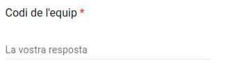
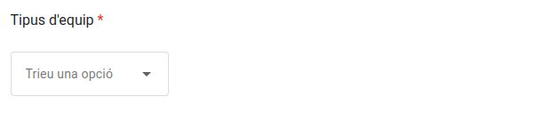
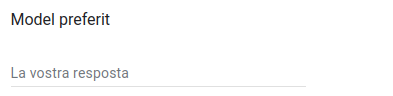
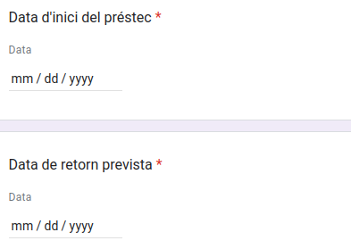
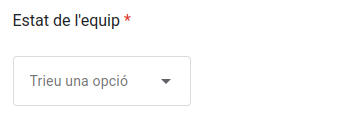
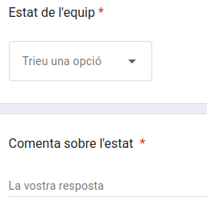
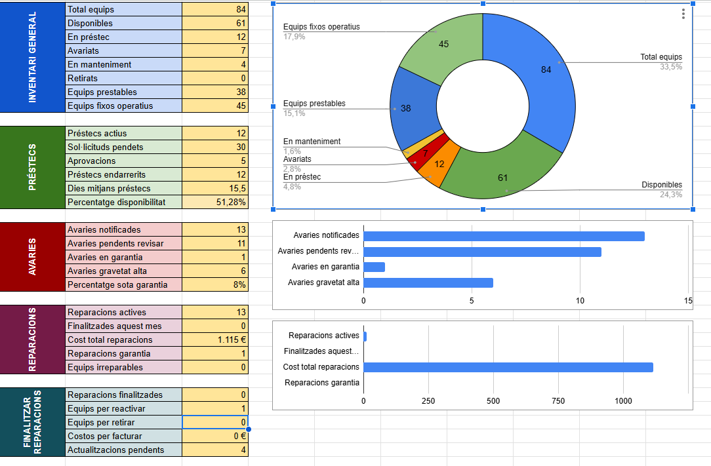

Secció Index
Enllaç directe als apartats del manual.
Introducció al Sistema d'Inventari
Què es i per a que existeix
Que es i per què existeix?
Aquest és un manual d’usuaris per aquells que no sàpiguen com funciona tot el nostre sistema de treball.
Explicarem pas a pas la utilització de les noves eines implentades en el sistema. L’objectius d’aquest manual es que totom que suigui nou utilitzant el nostre sistema sàpiga com desenvolupar se en aquest.
Qui pot utilitzar-lo?
En aquest manual podrà accedir tot el personal de l’equip ElectroTech, o les persones que tenen accés a l’enllaç de la web.
Tota la pàgina web està programada i pensada perquè es pugui utilitzar tant com un usuari avançat o un usuari normal, no fa falta que tinguis cap idea d’informàtica. Això gràcies a la facilitat de poder entendre el manual amb les seves explicacions visuals i Interfície gràfica programada a la web.
Visió general de funcionalitats
El nostre manual tindrà diferents apartats segon la funció de la eina que vagis a utilitzar com per exemple: solicitacio d’equips, retornada d’equips entre altres més.
Guia de préstecs
Com sol·licitar equips (amb captures)
- En aquest apartat aprendrem a com sol·licitar un equip pas a pas dins de un formulari.
Abans de tot accedirem al formulari per fer la sol·licitud
- En aquest apartat seleccionarem el nostre codi d'usuari. 
- Aqui triarem l’equip que volem demanar. 
- Escriurem un model en concret que vulguem. Aquesta és optatiu. 
- Posarem una data dinci del prestc i un altre de retornada prevista (aproximació). 
- Afegirem el nostre motiu del préstec i l'apartat d'observacions és optatiu.

Com retornar equips
Aquí aprendrem a com retornar l’equip que vam solicitar dins d’un formulari
Anirem al formulari per fer la retornada i ho omplirem.
- En aquest apartat posarem el codi del nostre equip que volem retornar
- Seleccionarem l’estat de l’equip 
- Escriurem un comentari sobre l’estat de l’equip i confirmarem el retorn. 

Una vegada fet tot aixo enviarem el formulari i així completarem la retornada de l’equip
Límits i restriccions
Les limitacions d'aquestes dues eines de sol·licitud i retornada és que s’ha d'emplenar manualment, ja que no es pot fer de manera automàtica.
Guia d'avaries
Com notificar problemas
La manera de poder notificar si el dispositiu té alguna avaria és mitjançant un formulari. Aquest formulari et demana informació tant de l'usuari com de l'equip, el dia que s'ha detectat el problema i la gravetat d'aquest.
Què esperar després de notificar
Després de fer la notificació d’una avaria, el que heu de fer és esperar, ja que la vostra resposta ha quedat emmagatzemada en un Excel, on posa la data d’inici i finalització de la reparació del teu equip, quan has de pagar o si tens garantia no cal. Finalment, l’equip encarregat en reparacions et donaran el teu equip reparat.
Seguiment de reparacions
Les reparacions es fan de la següent manera, tu com a client notifiques una avaria, per exemple un teclat, i això queda registrat a l'Excel on automàticament segons el tipus de dispositiu o perifèric que sigui, posa què és el que has de pagar, encara que si tens una garantia vigent no pagues res.
Dashboard
Com interpretar els KPIs
En la pestanya DASHBOARD veiem dos elements principals, cinc taules verticals que recopilen dades específiques segons el nom que tinguin les taules. Per exemple la taula REPARACIONS té tan sols dades que tenen a veure amb la reparacions d'equips i/o perifèrics.
Pero el més important són els gràfics on pots veure en un instant la situació que tenen els dispositius. En el gràfic principal es poden veure tant el percentatges com els numeros, dels equips que hi ha, equips averiats, en manteniment o en préstec, etc.
Després tenim el gràfic d’avaries i reparacions, on podem veure informació important sobre sobre les avaries i reparacions posterior que han hagut.
Com usar les pestanyes REPARACIONS
En aquesta pestanya de reparacions tenim dos apartats que s’han de modificar manualment, en aquest cas el lloc d’assignació dels dispositius en reparació i el tipus d'estat de la reparació. Aquestes es poden modificar gràcies als desplegables que hem integrat a les columnes.
Decisions que pot prendre
En la columna d’estat de reparació podem escollir un munt d’opcions disponibles amb el desplegable com per exemple, estigui finalitzada la reparació, en procés, que sigui irreparable, que aquest tingui un cost elevat entre altres. En la columna d’assignació del lloc de reparació és el mateix que l’altre, amb el desplegable es pot modificar el lloc assignat de la reparació com per exemple, llocs interns de l'empresa i llocs externs de l’empresa.